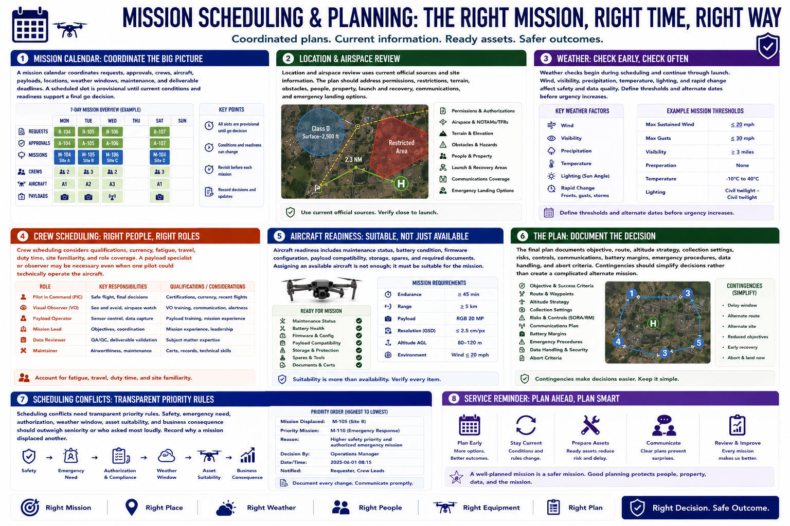

Flight Planning and Scheduling
Connecting to LMS... Progress: in progress

Narration
A mission calendar coordinates requests, approvals, crews, aircraft, payloads, locations, weather windows, maintenance, and deliverable deadlines. A scheduled slot is provisional until current conditions and readiness support a final go decision.
Location and airspace review uses current official sources and site information. The plan should address permissions, restrictions, terrain, obstacles, people, property, launch and recovery, communications, and emergency landing options.
Weather checks begin during scheduling and continue through launch. Wind, visibility, precipitation, temperature, lighting, and rapid change affect safety and data quality. Define thresholds and alternate dates before urgency increases.
Crew scheduling considers qualifications, currency, fatigue, travel, duty time, site familiarity, and role coverage. A payload specialist or observer may be necessary even when one pilot could technically operate the aircraft.
Aircraft readiness includes maintenance status, battery condition, firmware configuration, payload compatibility, storage, spares, and required documents. Assigning an available aircraft is not enough; it must be suitable for the mission.
The final plan documents objective, route, altitude strategy, collection settings, risks, controls, communications, battery margins, emergency procedures, data handling, and abort criteria. Contingencies should simplify decisions rather than create a complicated alternate mission.
Scheduling conflicts need transparent priority rules. Safety, emergency need, authorization, weather window, asset suitability, and business consequence should outweigh seniority or who asked most loudly. Record why a mission displaced another.